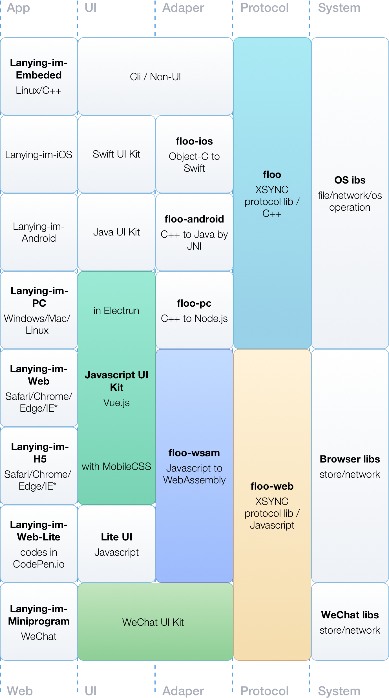
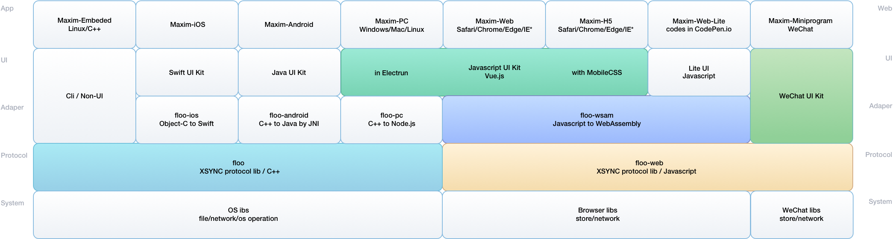
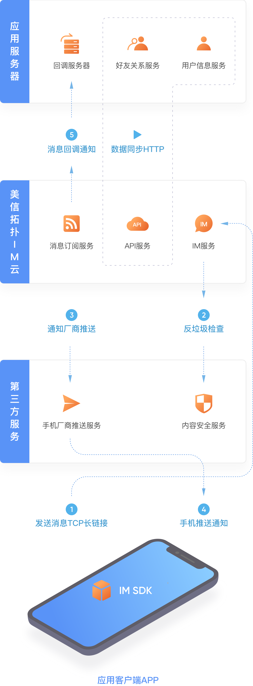

{% include nhead.html %} {% include snav.html %}
{% t auto.key_3823_230128347 %}{% comment %}美信拓扑已开源代码 163277 行{% endcomment %}
{% t auto.key_3824_454600730 %}{% comment %}美信拓扑开源（MTOS）2021.08.12{% endcomment %}
{% t auto.key_134_302632102 %} {% comment %}下载 Demo{% endcomment %}
{% t auto.key_135_944904830 %} {% comment %}控制台{% endcomment %}
{% t auto.key_136_346304374 %} {% comment %}提问{% endcomment %}
{% t auto.key_137_995593032 %} {% comment %}源码{% endcomment %}
{% t auto.key_138_901214947 %} {% comment %}客户端跨平台技术介绍以及各端集成指南{% endcomment %}

{% t auto.key_139_416015231 %} {% comment %}文档详情{% endcomment %}

{% t auto.key_140_712316576 %} {% comment %}服务端架构设计以及API详细说明{% endcomment %}

{% t auto.key_139_416015231 %} {% comment %}文档详情{% endcomment %}
{% include nfooter.html %}